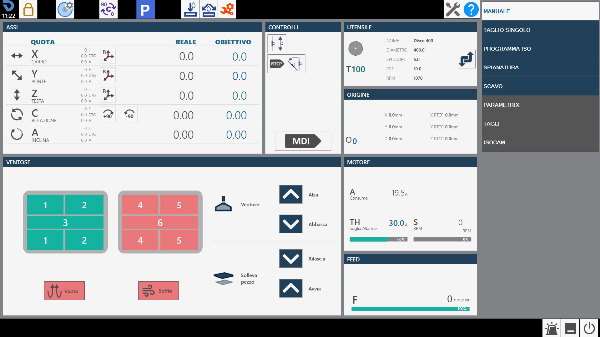
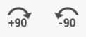
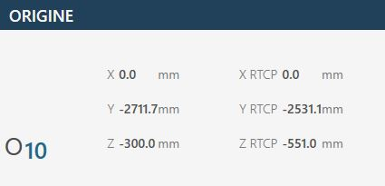
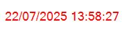

All’avvio dell’applicativo, se l’azzeramento degli assi è già stato eseguito, verrà visualizzata la seguente schermata iniziale:

Barra superiore
Parametri Permette di accedere ai parametri programma di Parametrix.
Parametri Utensile Premendo il pulsante, si accede nella pagina dei parametri dell’utensile. Si rimanda al capitolo “Configurazione Utensile” per una descrizione dettagliata della pagina parametri.
Rotazione automatica 0/ 90 gradi L’asse “C" viene spostata automaticamente a 0 oppure 90 gradi nell’istante in cui viene premuto il pulsante.
Parcheggio automatico Quando viene premuto la macchina effettua uno spostamento in automatico degli assi “X”, “Y”, “Z”, “C” in posizione di zero. Gli spostamenti vengono effettuati dalla macchina rispettando l’ordine seguente: (A) - Asse “Z” in posizione di zero assoluto; (B) - Asse “C” in posizione di 0 assoluto; (C) - Assi “X” e “Y” contemporaneamente in posizione di Zero assoluto;
ATTENZIONE!
Per effettuare il parcheggio automatico devono essere rispettate alcune condizioni di sicurezza:
La posizione dell’Asse “A” deve essere a 0_.
Accertarsi che la zona di movimento interessata al posizionamento (Vedi figura accanto) sia libera.
Zero Effettua l’azzeramento degli assi (Questa operazione è necessaria quando viene avviata la macchina o quando gli indicatori rettangolari sono rossi). Quando il ciclo di azzeramento è concluso gli indicatori saranno di colore grigio. La fase di azzeramento prevede la movimentazione sequenziale degli assi:
Asse Z
Asse A
Asse C
Contemporaneamente gli Assi X e Y
Asse B (Optional: Tornio controllato)
NOTA
L’azzeramento è consentito solamente quando la chiave codificata è inserita nella postazione adeguata, individuabile sulla console operatore.
Accensione / Spegnimento acqua interna Premendo questo pulsante viene attivata l’acqua dall’interno dell’utensile. La segnalazione sopra il pulsante cambia il colore: Verde = Accesa; Rossa = Spenta.
Accensione / Spegnimento acqua esterna Premendo questo pulsante viene attivata l’acqua del condotto principale. La segnalazione sopra il pulsante cambia il colore: Verde = Accesa; Rossa = Spenta.
Cambia Utensile Manuale Premendo il pulsante, si avvia la procedura di cambio utensile.
Manutenzioni Premendo questo pulsante verrà visualizzata una finestra contenente tutte le manutenzioni della macchina. Verranno visualizzate sia le manutenzioni da effettuare, sia quelle nella norma.
Aiuto Premendo questo pulsante verrà modificata leggermente la grafica di tutti i bottoni attualmente visibili e il loro comportamento. È ora possibile premere qualunque bottone con un piccolo punto di domanda nell’angolo alto sinistro per poter apprendere la funzione offerta dal bottone tramite un piccolo messaggio. Per poter uscire da questa modalità di assistenza è semplicemente necessario premere nuovamente il pulsante “Aiuto“.
Elementi interfaccia comune
Gli elementi dell’interfaccia grafica in comune per le funzionalità sono:
Assi
In questa interfaccia vengono riportati i valori degli assi della macchina.
Esempio di elemento dell’interfaccia “Assi“ con origine 0 e azzeramento degli assi già eseguito:
Esempio di elemento dell’interfaccia “Assi“ con origine 0 e azzeramento degli assi ancora da eseguire:
Di seguito si trova la spiegazione degli elementi che compongono questa sezione dell’interfaccia comune, vengono presi come riferimenti gli elementi nel caso assi già azzerati.
Quota reale: indica la posizione dell’asse rispetto all’origine attiva. Quota obiettivo: indica la quota da impostare per effettuare il movimento dell’asse attraverso la pressione del pulsante MDI o RTCP. F: Feed, velocità di movimento espressa in mm/minuto. DTG: Distance To Go, distanza dall’obiettivo. A: Ampere.
Reset Asse Premendo questo pulsante si imposta lo zero dell’origine attiva nel punto in cui si trova il relativo asse (X, Y o Z). L’operazione di reset asse può essere eseguita solo su origini diverse dalla 0 (zero). Per utilizzare l’origine in coordinate utensile (TCP) è necessario aver impostato le misure corrette dell’utensile montato prima di premere il pulsante Reset Asse.

Rotazione automatica _90 gradi La posizione dell’asse “C” viene incrementata di 90 gradi in senso orario. Esempio: la macchina si trova a 12 gradi, premendo il pulsante “Rotazione automatica _90 gradi” la macchina si porta a 102 gradi: 12 _ 90.
Rotazione automatica -90 gradi La posizione dell’asse “C” viene decrementata di 90 gradi in senso anti-orario. Esempio: la macchina si trova a 102 gradi, premendo il pulsante “Rotazione automatica -90 gradi” la macchina si porta a 12 gradi: 102 - 90.
Controlli
In questo pannello sono proposti alcuni pulsanti il cui comportamento viene spiegato di seguito:
Modalità interpolazione Quando il pulsante è attivo (figura di destra) i movimenti manuali Z, C e A vengono eseguiti considerando la rotazione e l’inclinazione. Movimento asse Z interpolato: azionando il JOG dell’asse Z la macchina si muoverà allineata all’utensile montato.
NOTA
Il tipo di utensile selezionato ha effetto sulla direzione di movimento.
Movimento asse C interpolato: azionando il comando dell’asse C, oltre alla rotazione verranno mossi anche gli assi X e Y, in modo che il filo interno della lama (o la punta dell’utensile) rimanga ferma. Movimento asse A interpolato: azionando il comando dell’asse A, oltre all’inclinazione verranno mossi anche gli assi X, Y e Z in modo che il filo interno della lama (o la punta dell’utensile) rimanga ferma nella posizione in cui si trova. Non sono consentite movimentazioni simultanee degli assi Z, C e A con la modalità interpolata attiva.
ATTENZIONE!
Prestare molta attenzione allo stato del pulsante in quanto i movimenti della macchina potrebbero risultare differenti da ciò che ci si attende.
Interpolazione RTCP Effettua un posizionamento impostato in quota “Obiettivo” alla quota A o della quota C mantenendo fermo il filo interno della lama (o la punta dell’utensile). Per ulteriori specifiche vedere il paragrafo: “Funzionalità semi-Automatico RTCP Rotation Tool Center Point”
MDI Quando viene premuto, la macchina effettua il movimento fino al raggiungimento delle quote impostate nelle quote obiettivo (Vedi sopra). La velocità degli assi X e Y è comandata dai rispettivi potenziometri, mentre gli altri assi vengono comandati dal potenziometro interpolato.
Utensile
In questo elemento dell’interfaccia vengono riportate le principali informazioni riguardanti l’utensile montato in macchina.
Esempio di utensile montato in macchina: Disco
Esempio di utensile montato in macchina: Foretto
Utensile attivo Cliccando questo pulsante viene visualizzato un pop-up di conferma che permette all’operatore di modificare il tipo di utensile montato in macchina.
La scelta è limitata tra:
Disco
Fresa / Foretto
Origine
Cliccando sul campo “Origine” verrà visualizzato un piccolo tastierino numerico su schermo che permetterà all’operatore di selezionare un'origine diversa con cui lavorare. I valori Origine possono variare da 0 a 19 compresi.
Esempio con origine 0:
Esempio con origine 10:

RTCP - Rotation Tool Center Point
La funzione RTCP consente all’operatore di effettuare un posizionamento per un taglio inclinato mantenendo l’altezza dell’utensile invariata, nonostante l’inclinazione venga variata durante il posizionamento. Il filo interno del disco rimarrà nella stessa posizione in cui si trova all’inizio della movimentazione.
Procedura di funzionamento
Impostare la quota obiettivo nell’area dedicata all’asse “A” (inclinazione) o “C”
Premendo il pulsante RTCP parte la funzione di inclinazione o rotazione mantenendo il punto più basso dell’utensile fisso.
NOTA
La movimentazione tramite comando RTCP è consentita solamente quando la chiave codificata è inserita nella postazione adeguata, individuabile sulla console operatore.
Attendere il posizionamento della macchina alla quota impostata.
Motore
In questa sezione sono riportate alcune statistiche riguardanti il motore della macchina:
Giri per minuto (RPM) Indica i giri del motore mandrino al minuto. Se il verso di rotazione è orario il valore risulta positivo, al contrario se il verso è antiorario, il segno è negativo.
Consumo (A) Indica la corrente assorbita dal motore mandrino.
Soglia allarme (A) Indica la soglia oltre la quale viene attivato l’allarme e bloccata la rotazione del mandrino.
Feed
Il valore Feed rappresenta lo spostamento interpolato della macchina.
Barra laterale destra
All’avvio dell’applicativo la funzionalità preselezionata è MANUALE. Questa barra laterale contiene i seguenti comandi e programmi/funzioni disponibili:
Barra inferiore
La barra inferiore visualizza messaggi informativi e di errore e alcuni pulsanti per determinate funzionalità. Vengono di seguito proposti tre esempi di barra inferiore:
Senza allarmi attivi.
Con un’emergenza generale abilitata, riportata con un’icona, un codice di errore (in questo caso PE0000), la relativa descrizione e il pulsante degli allarmi a destra lampeggiante.
Con un messaggio riportato, nell’esempio JOG diretto attivo.
Allarmi Permette all’operatore di accedere alla finestra degli allarmi.
Minimizzazione del software Permette all’operatore di uscire dalla pagina del software.
Spegnimento della macchina Permette all’operatore di spegnere definitivamente la macchina.
Allarmi
La pagina allarmi indica gli Allarmi/Messaggi attivi del sistema. Se la macchina non ha allarmi attivi la pagina risulta vuota, altrimenti sarà presente una riga per ogni errore presente. Nella seguente pagina di esempio relativa alla gestione e visualizzazione degli allarmi è visualizzato un allarme attivo nel sistema:
Pulsanti allarmi
Aggiorna Serve ad aggiornare lo stato degli allarmi della macchina.
Storico allarmi Permette di visualizzare lo storico giornaliero degli allarmi.
Messaggi / Allarmi Permette di scegliere se visualizzare gli allarmi o i messaggi.
Gruppi di allarmi Mostra informazioni complete degli allarmi attualmente presenti in macchina.
Visualizzazione degli allarmi - Standard
La visualizzazione standard di uno degli allarmi visualizzati è composto da:
Collegamento online Un pulsante con link per la relativa guida online.
Codice allarme Codice identificativo del problema che ha causato l’allarme.
Descrizione Una breve descrizione dell’errore riscontrato.
Visualizzazione degli allarmi - Storico
Lo storico giornaliero degli allarmi include, oltre agli elementi già descritti, anche i seguenti dati:
Momento cambio stato Data e ora di cambio stato dell’allarme.
Stato allarme Stato raggiunto dall’allarme (ON / OFF).
Visualizzazione degli allarmi - Gruppi
Il sistema di raggruppamento visualizza un'unica voce per ciascun allarme, evitando duplicazioni.
Numero Occorrenze Il numero di occorrenze di attivazione dell’allarme.
Momento prima attivazione Data e ora della prima attivazione dell’allarme.

Momento ultima attivazione Data e ora dell’ultima attivazione dell’allarme.